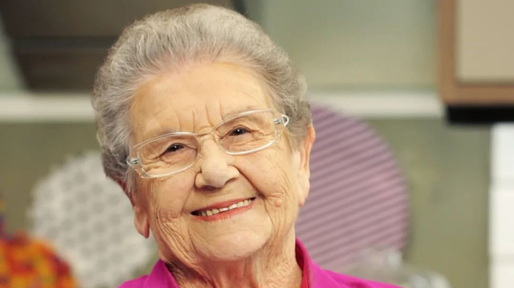

<!DOCTYPE html>
<html lang="en">
<head>
    <meta charset="UTF-8">
    <meta http-equiv="X-UA-Compatible" content="IE=edge">
    <meta name="viewport" content="width=device-width, initial-scale=1.0">
    <title>Tribute Page</title>
    <link rel ="stylesheet" href="style.css" href="style.css">
</head>
<body>    
</html>
    <title>Trubute Page </title>
</head>
<body>
    <mai id ="main">
        <h1 id= "title"> Vovó Palmirinha</h1>
    <p> A apresentadora e cozinheira deixa um grande legado para familiares e fãs.</p>
<figure id = "img-div">
    
    <figcaption id ="img-caption">
        Palmirinha Onofre fez a diferença na vida de muitas mulheres
    </figcaption>
    </figure>

    <section id = "tibute-info">
        <h3 id= "headline"> Vida e carreira de Palmirinha</h3>  
        <ul>
            <li>A cozinheira foi uma figura marcante na história da televisão brasileira, com suas participações especiais em programas culinários. Ela estreou nas telinhas em 1994, aos 63 anos, em uma matéria do programa da Silvia Popovic, na Bandeirantes.</li>
            <li>
                Ao ver que Palmirinha tinha talento e carisma de sobra, Ana Maria Braga chamou ela para participar do seu programa na Record, Note e Anote, em 1994. Aliás, Palmira virou Palmirinha por conta de Ana, ambas se chamavam pelo diminutivo. 
            </li>
            <li>
                Elas passaram cinco anos juntas apresentando o programa. Em 1999, ela começou na TV Gazeta para apresentar o TV Culinária. Além disso, ela teve oportunidade de apresentar o Programa da Palmirinha no canal fechado Bem Simples/FOX Life que ficou no ar até 2015.
            </li>
            <li>
                O último trabalho na TV foi em 2019 como jurada no reality Chef ao Pé do Ouvido, da GNT. Ainda assim, Palmirinha compareceu como convidada nos principais programas das emissoras nacionais.
            </li>
            <li>
                Ela também fazia sucesso nas redes sociais, seja pelo seu carisma e bom humor. Aliás, ela já foi até citada no livro “Os 198 maiores memes brasileiros que você respeita”, de Kleyson Barbosa.
            </li>           
</section>
<blockquote
cite="http://news.rediff.com/report/2009/sep/14/pm-pays-tribute-to-father-of-green-revolution-borlaug.htm"
>
<p>
  "Palmirinha não ia à televisão só para passar receitas às donas de casa. Ela chegou ali e começo a falar daquilo com a perspectiva dela, que era: 'você, que não consegue pagar suas contas, pode fazer disso um ganha-pão'."
</p>
<cite>-- Padiglione</cite>
</blockquote>
<h3> Leia mais sobre essa mulher incrível em <a id = "tribute-link" href="https://pt.wikipedia.org/wiki/Palmirinha" target ="_blank" > wikipedia</a></h3>

</section>
</mai>
</body>

</html>